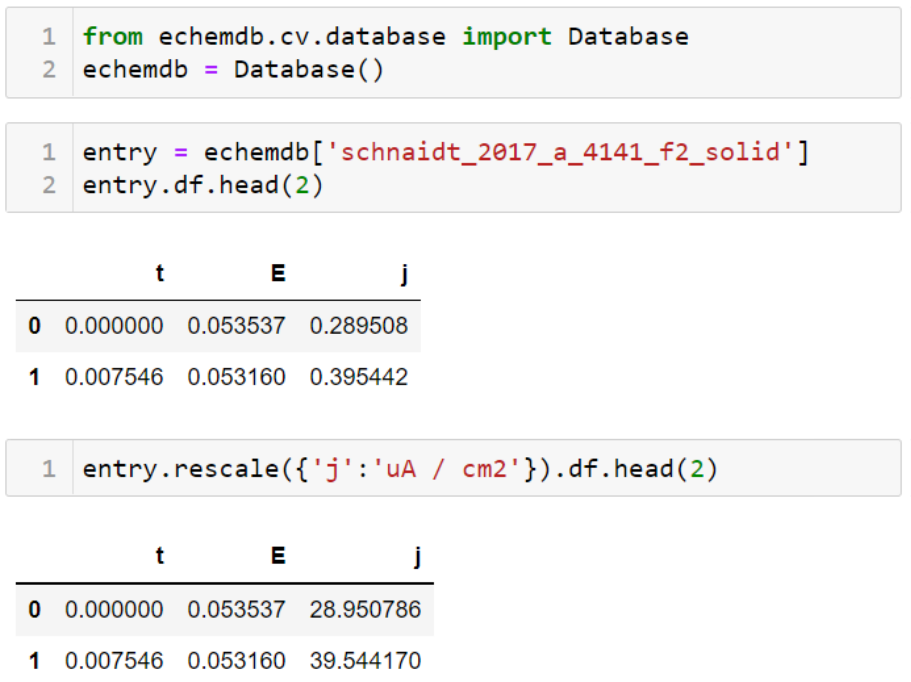
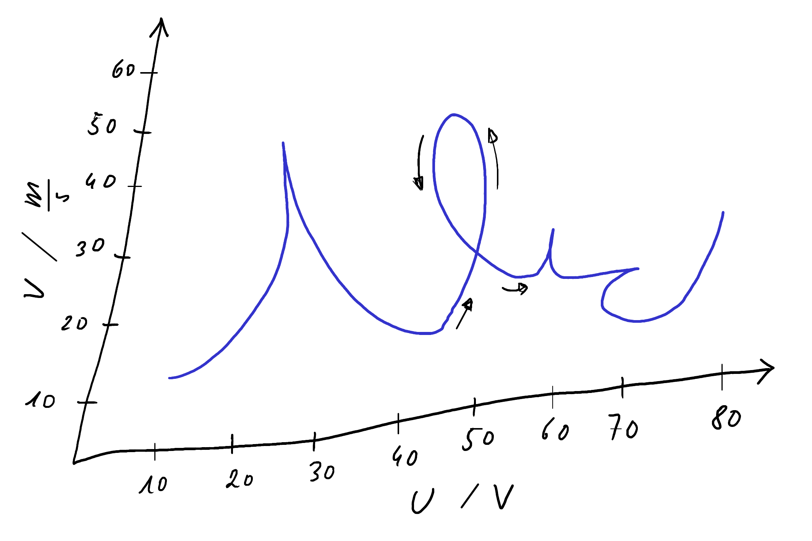

echemdb - the community database for electrochemical data

Philosophy
echemdb aims at standardizing (electrochemical) data according to the FAIR principles, allowing comparison of published data with data acquired in the laboratory, and theoretical models.
Website
The website shows cyclic voltammograms from the echemdb data repository which were standardized and validated from published works by the community.

API
The echemdb Python module provides an interactive way to visualize, filter, or evaluate the entries in the database.
Metadata
A metadata schema for electrochemical measurements renders electrochemical data interoperable.
Automated Data Annotation
AutotagMetadata is a tool with a GUI for automated tagging of newly created data with metadata from a template.

Digitizer
The svgdigitizer recovers data from published figures, where machine-readable data is not available.